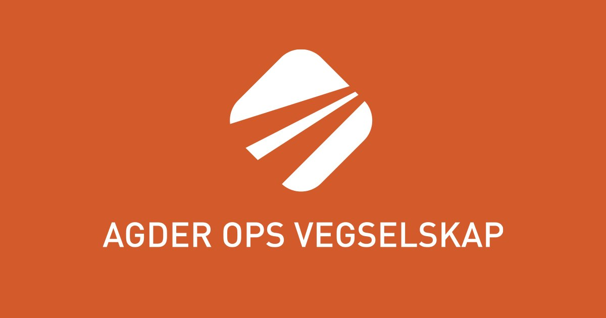
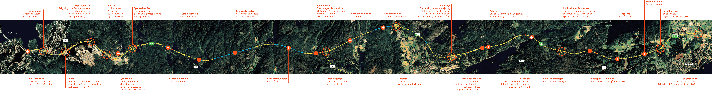
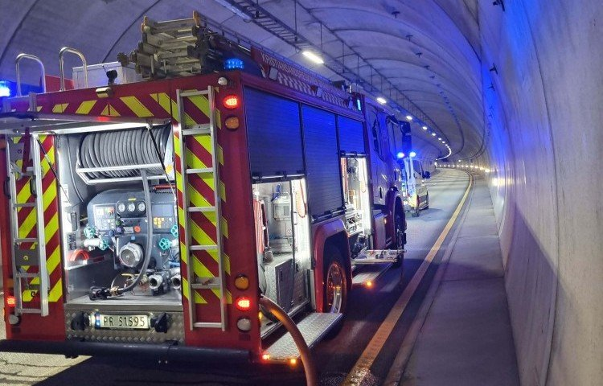
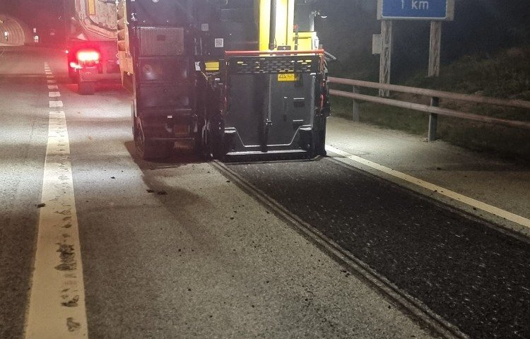

Infrastruktur & veidrift · Agder
Trygg og effektiv drift av E18 mellom Grimstad og Kristiansand
Agder OPS Vegselskap AS har det helhetlige ansvaret for finansiering, forvaltning, drift og vedlikehold av den 38 kilometer lange firefelts motorveien på E18 i Agder.

Dette hjelper vi deg med
Vi leverer gjennomtenkte løsninger med høy faglig standard, forutsigbarhet og personlig oppfølging.
-
01
Helhetlig OPS-forvaltning
Langsiktig offentlig-privat samarbeid (OPS) på oppdrag fra Statens vegvesen med fullt ansvar for veiens standard gjennom hele driftsperioden.
-
02
Drift og helårs vedlikehold
Kontinuerlig dekkevedlikehold, vinterdrift, renhold, grøntarbeid og teknisk ettersyn som sikrer høy oppetid og fremkommelighet.
-
03
Bro- ogabonnementsforvaltning
Systematisk inspeksjon og vedlikehold av strekningens 61 broer, 16 tunneler og 11 toplanskryss etter strenge sikkerhetskrav.
-
04
Trafikksikkerhet og beredskap
Regelmessige beredskapsøvelser med nødetatene, moderne trafikkstyringssystemer og kontinuerlig sikkerhetsovervåkning.
Om Agder OPS Vegselskap AS
E18 mellom Kristiansand og Grimstad åpnet i august 2009 som et av Norges mest omfattende OPS-veiprosjekter. Strekningen binder Agder-regionen sammen som et felles bo- og arbeidsmarked.
Gjennom OPS-modellen sørger Agder OPS Vegselskap AS for forutsigbar kvalitet, proaktivt vedlikehold og høy trafikksikkerhet for tusenvis av daglige trafikanter på hovedfartsåren gjennom Sørlandet.
- 38 km – Firefelts E18
- 61 broer – Konstruksjoner
- 16 tunneler – Sikkerhetsutrustet

Glimt fra virksomheten
Utvalgte bilder fra våre prosjekter, produkter og arbeidshverdag.


Slik jobber vi
En ryddig og oversiktlig prosess fra første henvendelse til ferdig leveranse.
-
STEG 01
Uforpliktende dialog
Ta kontakt via skjema, e-post eller telefon og fortell kort hva du ønsker hjelp til.
-
STEG 02
Kartlegging og løsningsforslag
Vi går gjennom behovene dine og gir deg konkrete råd, prisoverslag eller avtaler befaring.
-
STEG 03
Trygg gjennomføring
Arbeidet eller leveransen utføres til avtalt tid og pris, med tett oppfølging hele veien.
Klar for en uforpliktende prat med Agder OPS Vegselskap AS?
Send oss en melding i dag, så hjelper vi deg med rådgivning, priser eller et tilbud tilpasset dine behov.
Ta kontakt
Vi ser frem til å høre fra deg. Ta kontakt direkte eller bruk skjemaet, så svarer vi deg raskt.
- E-postpost@agderops.no
- OmrådeInfrastruktur & veidrift · Agder
- ResponstidVi svarer normalt innen én arbeidsdag